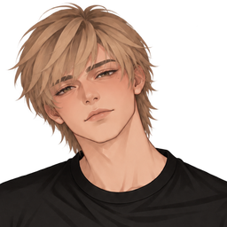

Нажми, чтобы продолжить ▸
Сохранить
Загрузить
Меню

Марк
Сообщения
Сообщение
➤
й
ц
у
к
е
н
г
ш
щ
з
х
ф
ы
в
а
п
р
о
л
д
ж
э
я
ч
с
м
и
т
ь
б
ю
123
пробел
↵
Отправить эту фотографию Марку?
Отправить фото
Назад
Продолжить →
Вернуться к истории ✕
Между строк
История о доверии, границах и выборе
Новая игра
Продолжить